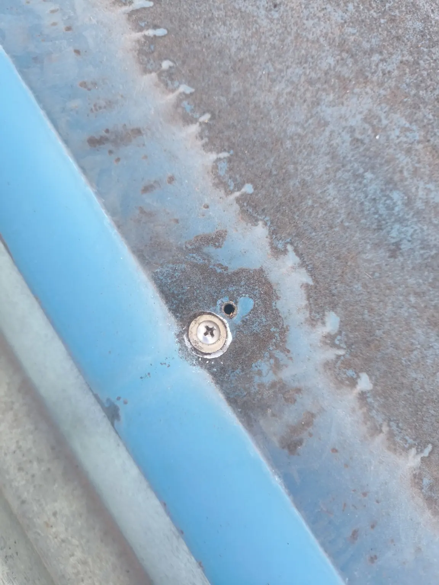
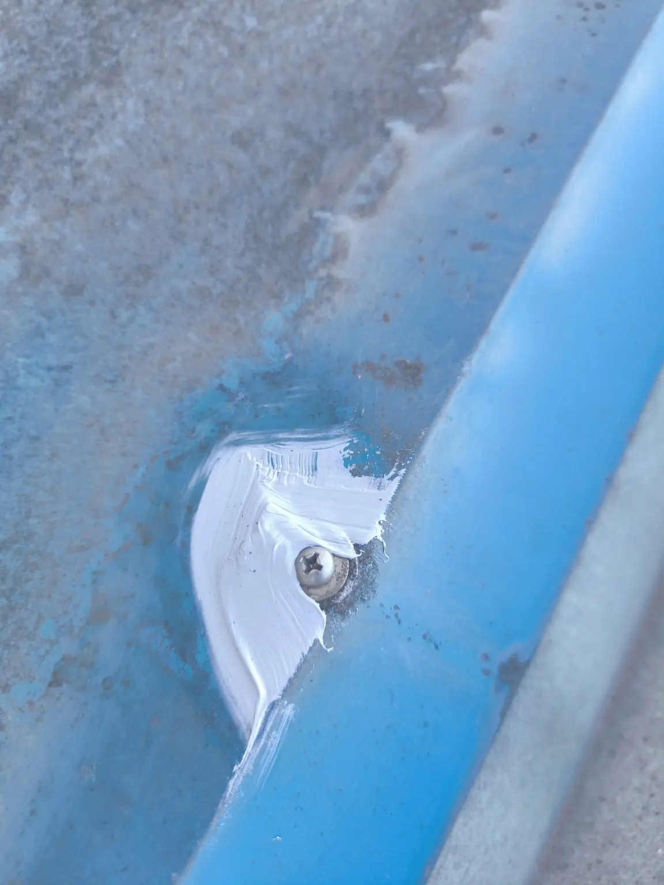

FACTORY / PARTIAL REPAIR
工場の屋上雨水排水設備追加・雨漏り部分補修
工場で行った2つの部分補修事例をご紹介します。屋上の雨水を排水する設備の追加工事と、別案件の雨漏り部分補修です。建物全体の改修ではなく、対象となる箇所を絞って対応した記録です。
CASE 01 / RAINWATER DRAINAGE
工場屋上の雨水排水設備を追加
屋上の雨水を排水するため、工場建屋に排水配管を追加しました。建物の間隔が狭い場所での配管の取り回しを、実際の施工写真で紹介します。
施工にあたっては、当社が高速道路の工事で培った技術を活用しました。具体的な施工数量、工期や排水能力は掲載していません。
- 対象
- 工場の屋上雨水排水
- 当社の作業
- 雨水排水設備の追加設置

CASE 02 / LOCAL WATER-LEAK REPAIR
工場の雨漏り箇所を部分補修
別の工場補修案件では、金属板の固定ビス周辺に対してシーリングによる補修を行いました。写真は同箇所付近の補修前後を示します。


写真だけでは漏水の原因や、補修後の止水性能を測定・保証するものではありません。状況や必要な補修範囲は現場ごとに確認します。
工場の排水設備・雨漏り補修のご相談
排水設備を追加したい、部分的な雨漏りを確認したいといったご相談も承ります。対象箇所・現場条件・ご希望の作業を伺い、必要な許可区分と施工範囲を確認して対応可否を検討します。
工場の部分補修について相談する →